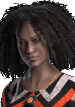

Выжившие
Дэвид Кинг
Его атлетичность и внушительный внешний вид привели его в регби, где тот мог пуститься во все тяжкие и действительно устроить погром. Кинг с блеском прошел отбор и вскоре приобрел репутацию хоть и несносного, но крайне многообещающего новичка. Но его головокружительный взлет оборвался довольно быстро, когда он был пожизненно изгнан из профессиональной лиги за прямую атаку рефери. Кингу было плевать — денег хватало, так что он воспринял это как досрочное завершение карьеры и сосредоточился на других вещах.

Личные навыки

Без сожаления

Крепкий орешек

Мы будем жить вечно
Джефф Йохансен
- Покупка платного DLC "Тьма вокруг нас"
- Активация персонажа в магазине за 500 золотых клеток или 9000 радужных осколков
После развода родителей Джеффу пришлось переехать вместе с матерью в Винклер в провинции Манитоба. Родной город и отец остались в далеком прошлом. В Винклере Джефф замкнулся еще сильнее, но все так же увлекался творчеством и музыкой. Вскоре после окончания старшей школы он начал работать в местном баре с живой музыкой. Потихоньку жизнь Джеффа стала налаживаться. Он стал подрабатывать рабочим сцены во время гастролей групп и в итоге покинул Винклер.

Личные навыки

Уход за больными

Поломка

Искажение
Джейн Ромеро
- Покупка платного DLC "Погибель Верных"
- Активация персонажа в магазине за 500 золотых клеток или 9000 радужных осколков
Будучи еще подростком, Джейн в тайне мечтала скопировать талант матери. Она ставила спектакли и играла в них, пробовалась в телерекламу и помогала отцу в студии. В последний год учебы она выступила на государственном соревновании по ораторскому искусству и заняла первое место. ЕЕ выступление заметили на одной радиостанции, и вскоре Джейн пригласили на интервью. Во время прямого эфира ее обаяние и находчивость покорили руководство, и Джейн получила предложение поработать на полставки.
Окончив факультет средств коммуникации, она уволилась со станции и устроилась в популярное варьете. НО искренность и склонность девушки к импровизации не понравились новому руководству, и через пять месяцев Джейн уволили. В отчаянии она вернулась на предыдущее место работы с рискованным проектом, который никто не решился принять.

Личные навыки

Солидарность

Равновесие

Напролом
Юи Кимура
- Покупка платного DLC "Проклятое наследие"
- Активация персонажа в магазине за 500 золотых клеток или 9000 радужных осколков

Личные навыки

Любыми средствами

Форсаж

Везение
Феликс Рихтер
- Покупка платного DLC "Падение за грань"
- Активация персонажа в магазине за 500 золотых клеток или 9000 радужных осколков

Личные навыки

Строим на века

Отчаянные меры

Визионер

Элоди Ракото (англ. "Elodie Rakoto") — один из персонажей
игры Dead by Daylight женского пола в роли выжившего.
Становится доступным для выбора при выполнении одного из
условий:
Элоди Ракото
- Покупка платного DLC "Родственные узы"
- Активация персонажа в магазине за 500 золотых клеток или 9000 радужных осколков
Когда девочке исполнилось четырнадцать, родители взяли ее на остров Дайер в "командировку". К ее огромному разочарованию, остров оказался частной территорией, доступной только для членов "Империатти". Каждый день она была вынуждена посещать напыщенные и нелепые светские рауты. Проведя несколько недель на острове, она познакомилась с Париями - подростками-единомышленниками, которые не желали быть пешками на шахматной доске их родителей. Скучными дождливыми вечерами она подбивала их сбегать из дома и исследовать остров без присмотра взрослых.

Личные навыки

Изучение

Уловка

Отчаянная борьба
Dead By Daylight
Контакты:
Помощь:
предложения отправлят сюда
@mail: dbd-help@mail.ru
D
E
A
D
E
A
D
B
Y
Y
D
A
Y
L
I
G
H
T
A
Y
L
I
G
H
T